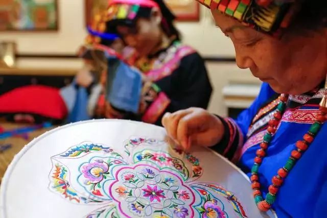
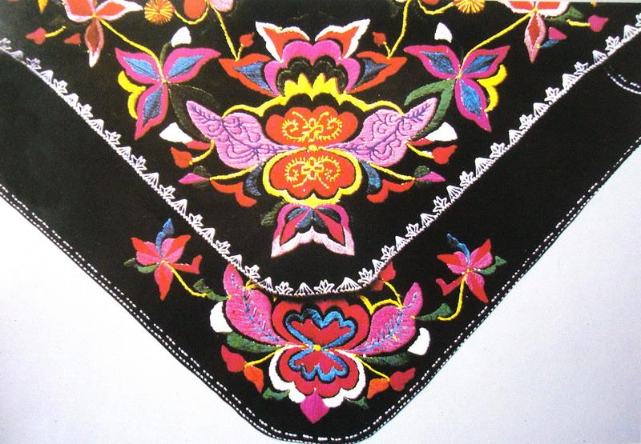
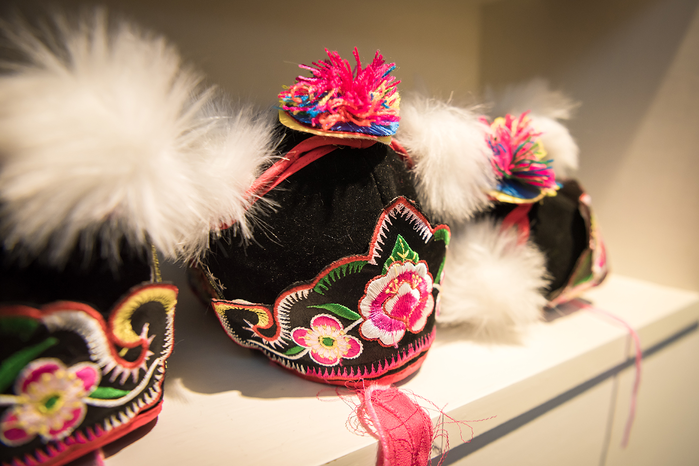
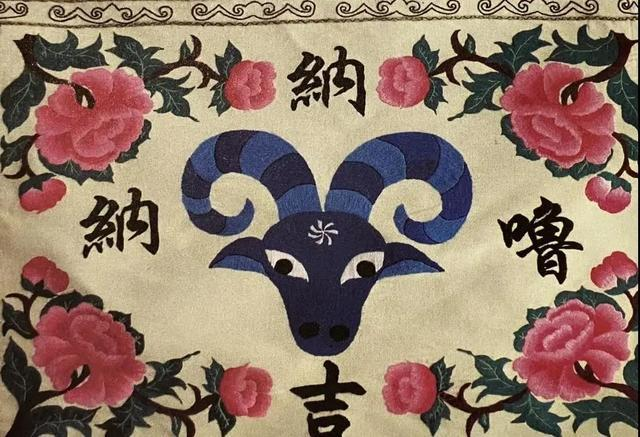
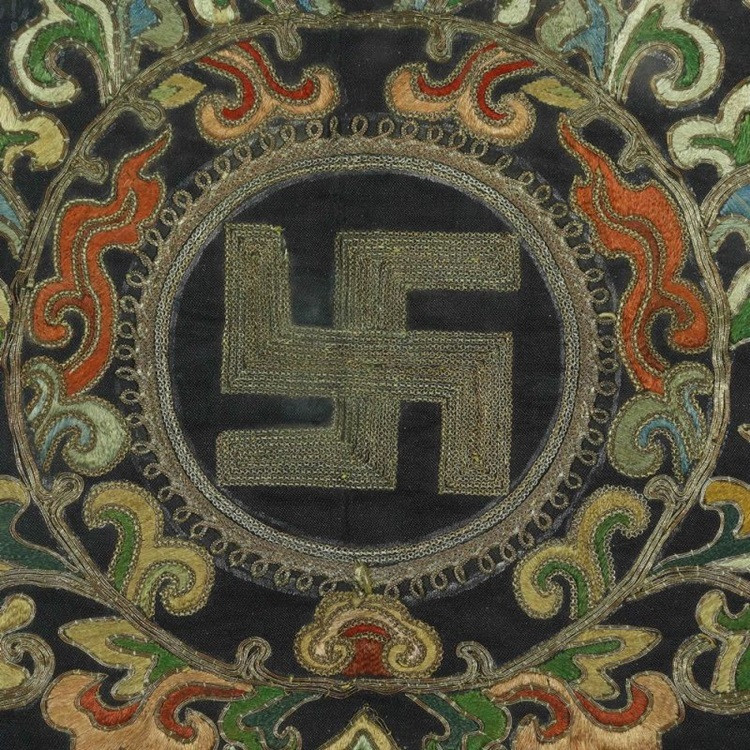

羌绣

羌族刺绣，四川省汶川县民间传统美术，国家级非物质文化遗产之一。 羌族刺绣是流行于四川等地羌民族聚居区的一种传统刺绣艺术，是羌民族传统文化艺术结晶，有着悠久的历史。羌绣的历史最早可以追溯到新石器时代，古老羌族器具上的简单纹饰、几何图形，被广泛地运用于羌人的日常生活中。自从羌族人具有了织麻和彩陶技艺后，就随之产生了刺绣服饰工艺。
羌族刺绣针法以精巧细致的架花（挑花）为主，此外还有织字（提花）、纳花（扎花）、撇花（平绣花）、勾花（链子扣）等多种。羌绣制品以花围腰和云云鞋为代表，所绣图案多呈几何形状，构图严谨，组织匀整，装饰性很强。其色彩爽丽明快，以黑白为多，而挑花和纳花上的设色绚丽夺目，宛若五彩霓虹。
2008年6月7日，羌族刺绣经中华人民共和国国务院批准列入第二批国家级非物质文化遗产名录，遗产编号为Ⅶ-76。2018年5月15日，羌族刺绣入选第一批国家传统工艺振兴目录。


云纹

羊角花

万字纹